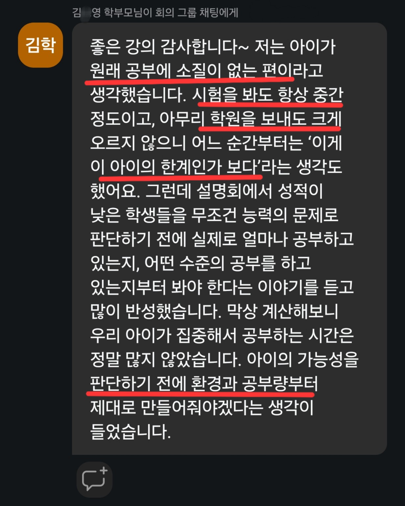
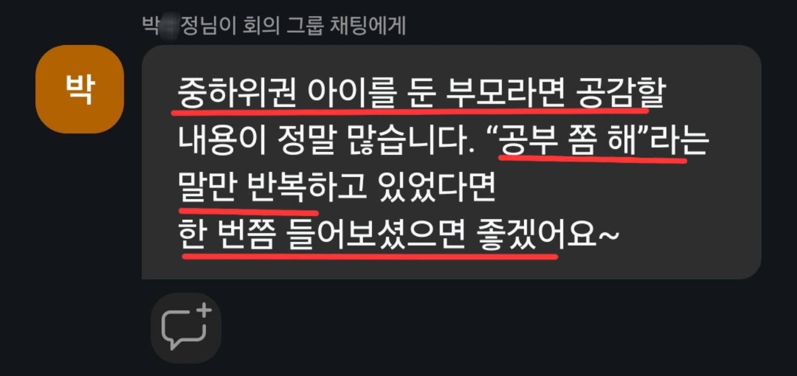
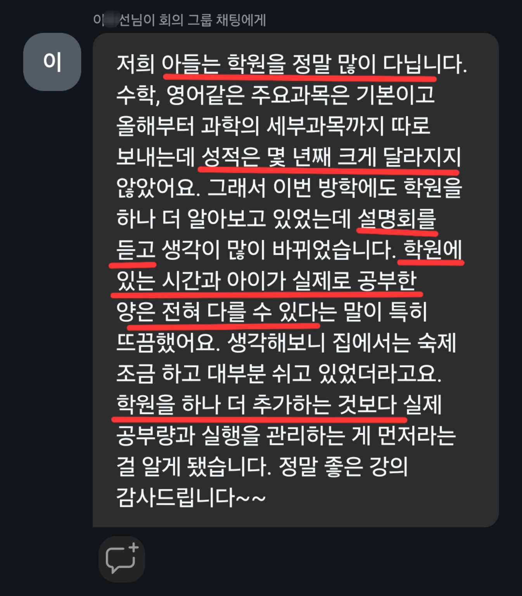
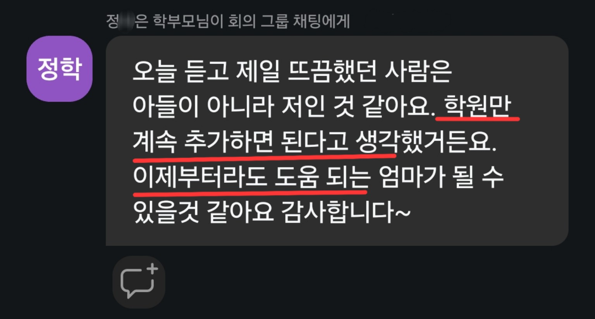
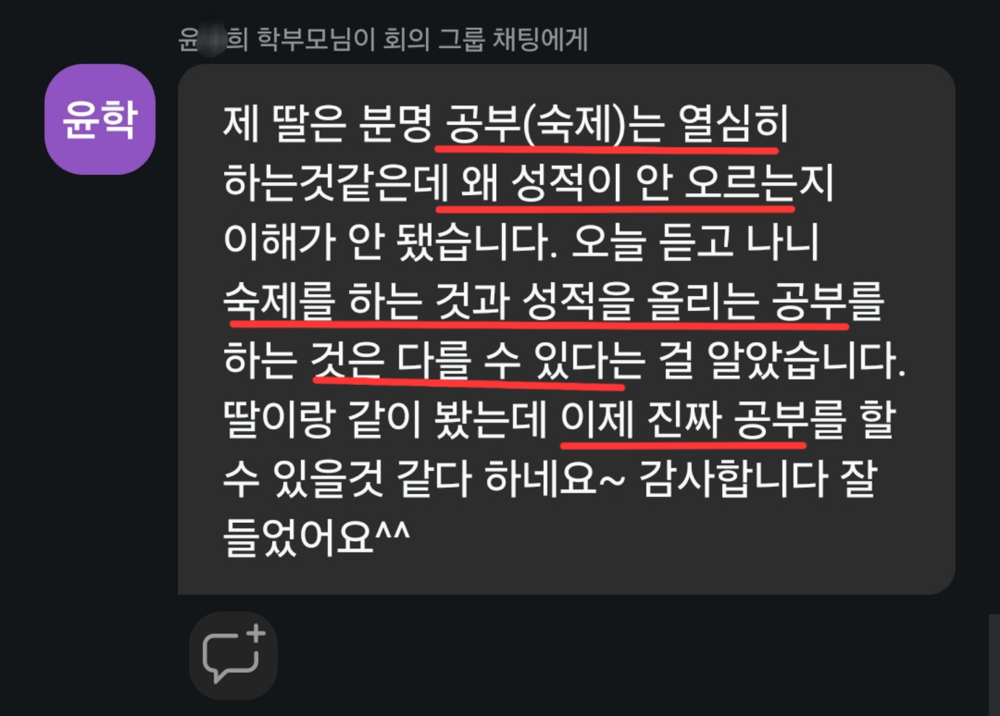
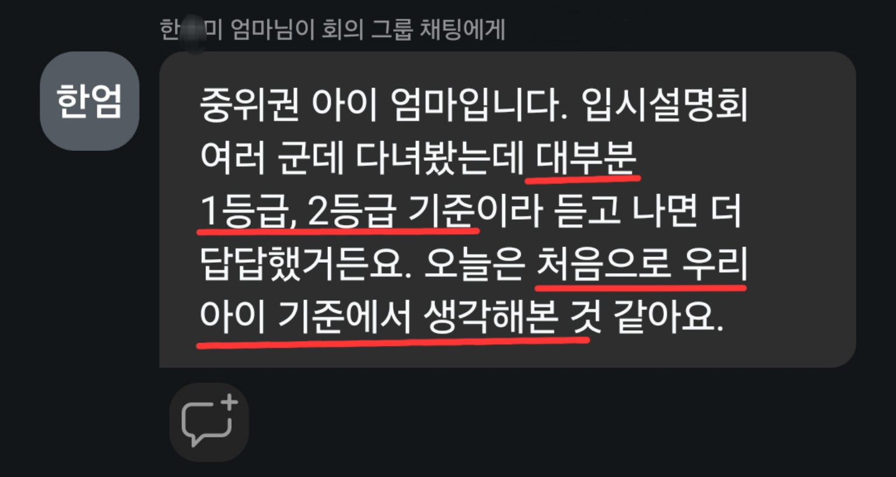

설명회 준비를 위해 우리 아이에게 가장 가까운 모습 하나 골라주시면 설명회에 큰 도움이 됩니다.
우리 아이에게 가장 가까운 모습은?
가장 가까운 것 하나만 골라주세요. 답변은 실제 설명회 준비에 참고하겠습니다.
같은 중하위권이어도
성적이 오르지 않는 이유는 모두 다릅니다.
중하위권 학생을 둔 부모님들과 이야기하다 보면 비슷한 성적대여도 실제 고민은 상당히 다릅니다.
공부 자체를 잘 시작하지 못하는 학생이 있고, 계획은 세우지만 실행하지 못하는 학생도 있습니다. 책상에는 오래 앉아 있지만 실제 공부량이 적은 경우도 있고, 학원을 많이 다니느라 정작 혼자 공부하는 시간이 부족한 경우도 있습니다.
반대로 공부량은 어느 정도 있는데도 공부 방법이 잘못되어 성적이 오르지 않는 학생도 있습니다. 시험기간마다 직전에 몰아서 공부하고, 시험 범위와 반복 횟수를 제대로 관리하지 못해 결과가 나오지 않는 학생도 있습니다.
성적이 오르지 않는 이유는 학생마다 다릅니다.
그래서 이번 설명회에서는 중하위권의 여러가지 케이스를 설명드리려고 합니다. 학생들에게 반복해서 나타나는 여러 케이스를 나누고, 각 경우에는 무엇이 문제이며 어떻게 해결할 수 있는지를 말씀드리려고 합니다.
이번 설명회에서는 각 중하위권 학생들의 해결법을 이야기합니다.
공부를 잘 시작하지 못하는 학생, 계획은 세우지만 실제 실행을 하지 못하는 학생, 책상에는 오래 앉아 있지만 실제 공부량이 적은 학생, 학원은 많이 다니는데 자기 공부가 없는 학생, 시험 직전에 몰아서 공부하는 학생, 그리고 공부는 하는데 성적이 잘 오르지 않는 학생까지 함께 살펴봅니다.
겉으로는 모두 “성적이 잘 오르지 않는다”는 같은 결과처럼 보이지만, 원인이 다르면 어떻게 해결해야 하는지도 달라집니다.
설명회를 듣고 난 뒤에는 적어도 “우리 아이는 지금 어디에서 막혀 있는지”, 그리고 “무엇부터 바꿔야 하는지” 지금보다 구체적으로 판단할 수 있게 만드는 것이 목표입니다.









저 역시 처음부터 공부를 잘했던 학생은 아니었습니다.

3월 모의고사 74명 중 57등 → 최고 3등
과학고 조기졸업 · POSTECH 재학
2023년 이후 중하위권·노베이스 학생 지도
『초압축 실전 공부법』 저자
매일공부매니저 대표 겸 강사
저 역시 고등학교에서 처음부터 좋은 성적을 받았던 학생은 아닙니다. 3월 모의고사에서 74명 중 57등으로 시작했고, 이후 공부 방식을 바꾸면서 최고 3등까지 성적을 올렸습니다. 이후 과학고를 조기졸업했고 현재는 포항공과대학교에 재학하고 있습니다.
이후에는 특히 중하위권과 노베이스 학생들을 많이 지도해왔습니다. 공부가 계속 막혀 있는 학생이 어디에서 멈추는지, 그리고 실제로 무엇을 바꿔야 성적이 오르는지를 보는 일에 집중해왔습니다.
학생을 지도하다 보면 “공부를 보는 것”과 “공부를 하는 것” 사이에 큰 차이가 있다는 것을 자주 보게 됩니다.
학생들에게 공부법을 설명해주고, 필요한 수학 개념을 가르쳐 주고, 문제풀이도 많이 시켜봤습니다. 그런데 결국 혼자 공부하는 절대적인 시간이 많이 부족하더라고요.
그래서 저는 매일 어느 정도의 공부를 수행할지 계획을 세워주고, 계획한 공부를 실행했는지까지 관리 해줍니다.
이번 무료 설명회에서는 우리 아이의 성적이 오르지 않는 이유가 무엇인지 이해하고, 해결법을 찾아내는 것을 말씀드리려고 합니다.
설명회를 들으실 때
이 생각 하나만 하고 오셔도 좋습니다.
설명회에서는 중하위권 학생들에게 반복해서 나타나는 사례를 하나씩 보면서 우리 아이에게 가장 가까운 경우가 무엇인지, 그리고 그 경우에는 무엇부터 바꿔야 하는지를 함께 살펴보겠습니다.
설명회 이후에도 중하위권 공부법과 입시 정보를 계속 받아보고 싶다면
인스타그램을 팔로우해주세요.
DM으로 궁금한 점을 보내주셔도 됩니다.
설명회 접속 링크는 신청하실 때 입력하신 연락처로 전날과 당일 다시 안내드리겠습니다.